Los desterrados del decimo mundo
En esta seccion aparecerán solo los desterrados que hayamos derrotado en nuestro mundo.
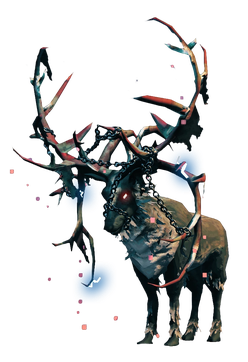
Eikthyr — El heraldo del trueno
En las tierras donde los primeros guerreros dan sus pasos, un poderoso ciervo ancestral vigila los bosques. Eikthyr, criatura nacida de la furia de la naturaleza, es el primer gran desafío que espera a todo vikingo que aspire a conquistar Valheim.
Sus enormes astas están cargadas de energía y sus embestidas sacuden la tierra. Desde ellas desata relámpagos capaces de atravesar a sus enemigos, mientras su fuerza y velocidad hacen de cada enfrentamiento una verdadera prueba de valor.
Eikthyr no es simplemente una bestia: es el guardián que separa al guerrero inexperto de aquel que está listo para comenzar su verdadera aventura.
Antes de conquistar Valheim, tendrás que demostrar que eres digno de sobrevivir a su primer desafío.
Builds de comidas para derrotarlo.
Build para maximizar salud ❤️
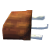
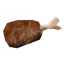
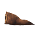
Build para combinar salud y estamina ❤️⚡
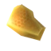
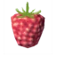
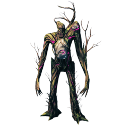
Elder — El guardián del bosque
En las profundidades de la Selva Negra, entre antiguas ruinas y árboles que parecen no tener fin, despierta El Sabio, una criatura ancestral ligada a las raíces mismas de Valheim.
Su enorme cuerpo, formado por madera viva y ramas retorcidas, se alza como un guardián de la naturaleza. Con sus raíces puede atrapar a sus enemigos y hacer brotar una lluvia de proyectiles desde las profundidades del bosque.
Antiguo y poderoso, El Sabio protege los secretos de la Selva Negra con una furia implacable, dispuesto a destruir a cualquier guerrero que ose profanar su dominio.
Para enfrentarlo, primero tendrás que adentrarte en el corazón del bosque y desafiar a su eterno guardián.
Builds de comidas para derrotarlo.
Build para maximizar salud ❤️
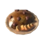
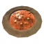
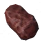
Build para combinar salud y estamina ❤️⚡
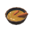
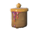
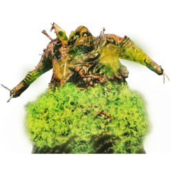
Bonemass — El señor de la podredumbre
En lo más profundo de los pantanos de Valheim yace Bonemass, una abominación nacida de la muerte y la corrupción.
Su enorme cuerpo, formado por huesos, carne podrida y lodo, esconde una fuerza brutal. Capaz de invocar criaturas y desatar un veneno mortal, convierte cada batalla en una lucha por la supervivencia.
Resistente, implacable y rodeado de muerte, Bonemass espera en las profundidades del pantano a todo aquel que se atreva a desafiarlo.
Solo los guerreros más preparados podrán sobrevivir a su podredumbre.
Builds de comidas para derrotarlo.
Build para maximizar salud ❤️
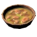
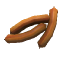
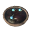
Build para combinar salud y estamina ❤️⚡
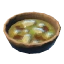
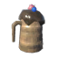
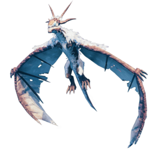
Moder — La madre de las montañas
En las cumbres heladas de las Montañas, donde los vientos azotan las rocas y la nieve cubre cada sendero, habita Moder, la imponente madre de los dragones.
Con sus enormes alas domina los cielos y desciende sobre sus enemigos con una fuerza devastadora. Su aliento de hielo puede congelar a los guerreros en plena batalla, mientras sus rugidos resuenan entre las montañas.
Antigua y poderosa, Moder protege su territorio desde las alturas, esperando al guerrero que se atreva a desafiarla.
Solo aquellos capaces de conquistar las montañas podrán alzarse contra la madre de los dragones.
Builds de comidas para derrotarla.
Build para maximizar salud ❤️
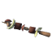
Build para combinar salud y estamina ❤️⚡
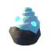
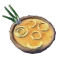
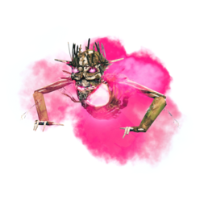
Yagluth — El rey de los caidos
En las tierras áridas de las Llanuras, entre aldeas abandonadas y antiguos altares de piedra, aguarda Yagluth, el último y más poderoso de los grandes seres que alguna vez gobernaron estas tierras.
Su enorme cuerpo, reducido a un esqueleto envuelto en llamas, esconde un poder capaz de desatar la destrucción sobre todo aquel que se atreva a enfrentarlo. Sus golpes hacen temblar la tierra y sus ataques de fuego convierten el campo de batalla en un infierno.
Yagluth no es simplemente un enemigo: es la encarnación de una fuerza antigua que se niega a desaparecer.
Solo los guerreros que hayan sobrevivido a las tierras más salvajes de Valheim podrán enfrentarse al rey de los caídos.
Builds de comidas para derrotarlo.
Build para maximizar salud ❤️
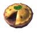
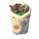
Build para combinar salud y estamina ❤️⚡
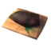
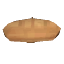